Zum Online-Shop
Zum Online-Shop6.3 Threat Modeling
Sie wissen jetzt, wie man Bedrohungen in Bedrohungsbäumen darstellt. Nehmen Sie sich das Konzept Ihrer nächsten App, und erstellen Sie alle Bedrohungsbäume, die Ihnen einfallen. Wenn Sie jetzt zu den 99 % aller Leute gehören, denen mit Mühe ein oder zwei Bedrohungen einfallen, dann sind Sie in guter Gesellschaft. Ohne weiteres Hilfsmittel aus dem Blauen heraus Bedrohungen identifizieren zu wollen ist ähnlich schwierig, wie auf Befehl hin lustig zu sein (so wie es in der einen oder anderen rheinischen Stadt in bestimmten Jahreszeiten krampfhaft versucht wird). Leider bleibt es auch dabei allzu häufig nur bei einem Versuch.
Um dem Problem der Einfallslosigkeit zu begegnen, kann man entweder für horrende Tagessätze einen Security-Experten einkaufen oder sich einer Methodik bedienen, die strukturiert durch den Prozess der Bedrohungsanalyse führt. Diese Methode nennt sich Threat Modeling – das Modellieren von Bedrohungen. Bekannt gemacht hat diese Methode die Firma Microsoft, indem sie Threat Modeling als integralen Bestandteil des Secure Development Lifecycle implementiert hat.
Ursprünglich kommt Threat Modeling aus dem militärischen Bereich. Ende der 90er-Jahre wurde es von der US-Army und der britischen Armee entwickelt. Mittlerweile ist es als Methodik zur Risikoanalyse in der Norm AS/NZS 4360 implementiert, seit 2005 Bestandteil des CVSSE (US Homeland Security), und obendrein ist es Bestandteil von OCTAVE, dem Operationally Critical Threat, Asset, and Vulnerability Evaluation, einem Ansatz zum Management von Informationssicherheitsrisiken des Software Engineering Institute der Carnegie Mellon University.
Der von Microsoft verwendete Ansatz beim Threat Modeling basiert auf der Idee, eine Applikation (ein System, eine Infrastruktur etc.) anhand eines Datenflussdiagramms (DFD) zu modellieren. Der Gedanke dahinter ist, dass Angriffe nur dort möglich sind, wo Daten in ein System gelangen bzw. ein System verlassen. Modelliert man den Fluss der Daten durch eine Anwendung, muss man nur noch an allen relevanten Stellen überlegen, welche Bedrohung dort wirken kann.
Die Erstellung des Threat Models erfolgt erstmalig in der Design-Phase der Entwicklung, also noch bevor überhaupt eine einzige Zeile Code programmiert worden ist. Der Gedanke dahinter ist, dass es wesentlich günstiger ist, Sicherheitslücken so früh wie möglich im Entwicklungsprozess zu identifizieren, denn je später eine Sicherheitslücke gefunden und behoben wird, desto teurer ist die Behebung derselben. Insbesondere ist das Threat Modeling auch dazu geeignet, Designfehler zu finden, eine Fehlerklasse, die sich mit automatischen Tools zur Code-Analyse nicht identifizieren lassen. Und eine auf einem Designfehler beruhende Sicherheitslücke zu schließen, kann extrem teuer oder gar unmöglich sein.
| Die Geschichte vom Backup-Monster |
|
Einer der beiden Autoren, hauptberuflich als Consultant im Bereich IT-Sicherheit tätig,
bekam vor einigen Jahren den Auftrag eines Kunden, nennen wir ihn der Einfachheit
halber »Backup-Monster«, seine bereits im Betrieb befindliche Software für Online-Backups
auf Sicherheitslücken hin zu untersuchen.
|
Neben der vorstehenden Anekdote veranschaulicht der NIST-Report »The Economic Impacts of Inadequate Infrastructure for Software Testing« aus dem Jahr 2002 sehr deutlich den Zusammenhang zwischen dem Zeitpunkt des Findens eines Fehlers und den Kosten zu seiner Behebung, wie Abbildung 6.2 zeigt (das NIST ist das US-amerikanische Institut für Standardisierung, das National Institute of Standards and Technology).
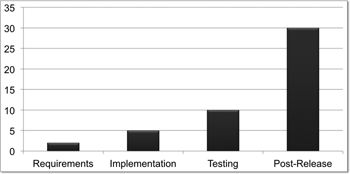{kind=link}
Abbildung 6.2 Kosten für die Fehlerbehebung in relativen Werten im Vergleich untereinander
Bei jeder Änderung an der Software, die Auswirkungen auf den Datenfluss hat, muss eine Prüfung des Threat Models stattfinden.
6.3.1 Erstellen eines Datenflussdiagramms
Abbildung 6.3 zeigt ein einfaches Datenflussdiagramm für eine Banking-App, eine App also, die für den Zugriff auf Kontodaten bei einer Bank gedacht ist. Dieses Diagramm zeigt die App und ihre Kommunikationsbeziehungen. Es enthält noch keine näheren Informationen darüber, wie die App intern strukturiert ist. Ein Datenflussdiagramm dieser Detailtiefe bezeichnet man als Kontextdiagramm, und dies ist die Grundlage eines Threat Models.
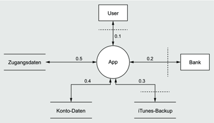{kind=link}
Abbildung 6.3 Kontextdiagramm einer Banking-App
Die nächste Ebene des Datenflussdiagramms, die Ebene 1, zeigt die einzelnen Module der App (siehe Abbildung 6.4). Je nach Komplexität von Architektur oder App lässt sich das Datenflussdiagramm in weiteren Ebenen immer mehr verfeinern. Für die meisten Fälle genügen die Ebenen 0 und 1 aber vollkommen, denn wie Sie gleich sehen werden, lassen sich aus Abbildung 6.3 und Abbildung 6.4 schon alle relevanten Bedrohungen ermitteln, die gegen eine Banking-App wirken können.
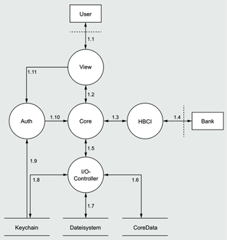{kind=link}
Abbildung 6.4 Ebene 1 der Banking-Applikation im Datenflussdiagramm
Bevor es an die Analyse des Datenflussdiagramms geht, ist noch ein kurzer Abstecher in die Formalitäten-Ecke notwendig, denn Sie werden wissen wollen, aus welchen Elementen ein Datenflussdiagramm überhaupt bestehen kann respektive was die vorstehenden Abbildungen überhaupt bedeuten.
Ein Datenflussdiagramm kann aus den folgenden Elementen bestehen:
- Entität
- Prozess
- Prozessgruppe
- Datenspeicher
- Datenfluss
- Trust boundary
Im Folgenden sehen wir uns diese Elemente genauer an, bevor wir unsere Beispiel-App analysieren.
Entität
Eine Entität repräsentiert einen Akteur. Ein Akteur ist dadurch gekennzeichnet, dass er Aktionen ausführt, ohne dabei Daten zu verarbeiten. Ein Akteur erzeugt oder konsumiert Daten, verarbeitet sie aber nicht, zumindest nicht in einem für die sicherheitstechnische Analyse zu beachtenden Rahmen – ganz im Unterschied zu einem Prozess. In der Fachsprache bezeichnet man daher eine Entität im DFD als Quelle (erzeugt Daten) oder Senke (konsumiert Daten).
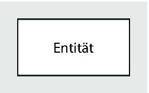{kind=link}
Abbildung 6.5 Entität im DFD
Beispiele für Entitäten sind:
- Benutzer
- Server
- Client
- Internet
- Applikation
- www.galileopress.de
- Clemens Wagner
Prozess
Im Gegensatz zu einer Entität ist ein Prozess dadurch gekennzeichnet, dass er Daten verarbeitet. Das bedeutet, dass ein Prozess mindestens einen Dateneingang (entry point) und mindestens einen Datenausgang (exit point) besitzen muss. Ein Prozess kann niemals Quelle oder Senke in einem DFD sein. Die von einem Prozess zu verarbeitenden Daten müssen von außen zugeführt, und die verarbeiteten Daten müssen nach außen abgegeben werden.
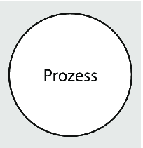{kind=link}
Abbildung 6.6 Prozess im DFD
Beispiele für einen Prozess sind:
- App
- XML-Parser
- Authentisierungsmodul einer App
- Webserver
- I/O-Controller
Prozessgruppe
Eine Prozessgruppe ist nichts anderes als das, was der Name suggeriert: eine Gruppe von Prozessen, die der Übersichtlichkeit halber im DFD zu einer Gruppe zusammengefasst sind. Im Regelfall löst sich diese Gruppe in weiteren Ebenen des DFD auf. Eine komplexe App würde man beispielsweise in der Ebene 0 als Prozessgruppe zeichnen und in den folgenden Ebenen dann in Module aufteilen.
Für die Prozessgruppe gelten folglich dieselben Regeln wie für einen Prozess: Sie muss mindestens einen Dateneingang und mindestens einen Datenausgang haben.
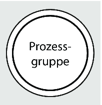{kind=link}
Abbildung 6.7 Prozessgruppe im DFD
Datenspeicher
Um mit Gertrude Stein zu sprechen: Ein Datenspeicher ist ein Datenspeicher ist ein Datenspeicher. Der Wortsinn steht für die Bedeutung im DFD. Jeder Ort, an dem Daten gespeichert werden, ist im DFD ein Datenspeicher. Im Gegensatz zu einem Prozess, der möglicherweise auch Daten speichert, und sei es nur temporär, verarbeitet der Datenspeicher keine Daten, ist also ein rein passives Element und somit zwingend Quelle und/oder Senke von Informationen.
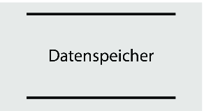{kind=link}
Abbildung 6.8 Datenspeicher im DFD
Beispiele für einen Datenspeicher sind:
- Datenbank
- Datei
- iCloud
- Heap/Stack
- Keychain
- Hardcopy (Ausdruck)
Datenfluss
Der Datenfluss symbolisiert den eigentlich Sinn des DFD, nämlich den Weg der Daten durch das modellierte System. Dabei stellt der Pfeil die Richtung des Datenverlaufes von einer Quelle zu einer Senke dar. Ein bidirektionaler Datenfluss kann entweder durch zwei gegenläufige Pfeile oder einen Doppelpfeil dargestellt werden.
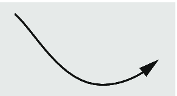{kind=link}
Abbildung 6.9 Datenfluss im DFD
Beispiele für einen Datenfluss sind:
- Netzwerkverkehr
- Benutzereingabe über GUI
- IPC
- Shared Memory
- RPC-Aufruf
Trust boundary
Die Vertrauensgrenze oder Trust boundary ist eine Erweiterung des ursprünglichen DFD für den Anwendungsfall Threat Modeling. Eine Vertrauensgrenze trennt Bereiche unterschiedlicher Sicherheitsniveaus. Diese sind beim Threat Modeling von besonderem Interesse, da sich dort in der Regel die meisten Angriffsvektoren ergeben.
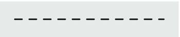{kind=link}
Abbildung 6.10 Vertrauensgrenze (Trust boundary) im DFD
Beispiele für Vertrauensgrenzen sind:
- Firewall
- Prozesse mit unterschiedlichen Rechten
- Kommunikation über Netzwerke
- unterschiedliche Systeme (z. B. iPhone und iTunes-Rechner)
Analyse der Beispiel-App
Mit den Informationen aus den vorstehenden Absätzen können Sie nun die in Abbildung 6.3 und Abbildung 6.4 modellierte App analysieren. Das Kontextdiagramm zeigt, dass es zwei Entitäten gibt, die die App mit Daten beliefern. Der Benutzer gibt Daten über die GUI ein, und die Bank liefert Daten über das Netzwerk. Die App speichert die Zugangsdaten für das Onlinebanking sowie die Bewegungs- und Transaktionsdaten in jeweils einem Datenspeicher. Zusätzlich gibt es zu beachten, dass Daten der App beim automatischen Backup über iTunes auf den Rechner des Benutzers gelangen können.
Ebene 1 teilt die App in ihre Hauptmodule auf, sodass der Datenfluss innerhalb der App sichtbar wird. Die Schnittstelle zum iTunes-Backup ist in dieser Ebene entfallen, da sie zur Darstellung im Kontextdiagramm keiner weiteren Detaillierung mehr bedarf.
Mit diesen beiden Diagrammen können Sie nun beginnen, spezifische Bedrohungen für die App zu ermitteln. Dazu ist es sinnvoll, eine Tabelle mit allen Elementen der DFDs zu erstellen und diese Tabelle Zeile für Zeile zu durchlaufen und für jedes Element zu überlegen, welche Bedrohung wirken kann. Entitäten, Prozesse und Datenspeicher lassen sich aufgrund der geringen Anzahl leicht in einer Tabelle wiederfinden. Um die vielen Datenflüsse sinnvoll in eine Tabelle überführen zu können, sollten Sie diese – wie in den beiden Abbildungen – mit Nummern versehen. Es hat sich in der Praxis als hilfreich herauskristallisiert, die Nummern aus der jeweiligen Ebene des DFD, gefolgt von einem Punkt und einer fortlaufenden Nummer zusammenzusetzen. Damit ist sofort klar, in welcher Ebene sich der Datenfluss befindet, was bei komplexen Diagrammen mit vielen Ebenen extrem hilfreich ist.
6.3.2 STRIDE
Nachdem Sie das Datenflussdiagramm für Ihre App erstellt und alle Elemente in eine Tabelle überführt haben, kommt STRIDE ins Spiel. STRIDE hat seinen Ursprung ebenfalls bei Microsoft und ist ein Akronym, das sich aus den Anfangsbuchstaben der sechs Kategorien zusammensetzt, in die sich alle Bedrohungen einordnen lassen, die auf ein IT-System wirken können. STRIDE ist also genau die Hilfe, die Sie benötigen, um Bedrohungen identifizieren zu können. Für jedes Element im DFD, also für jede Zeile der Tabelle, müssen Sie jetzt »nur« noch überlegen, welche Art von Bedrohungen aus den sechs STRIDE-Kategorien wirken kann. Sie erhalten mit STRIDE also eine generische Bedrohungsvorlage und können daraus eine konkrete Bedrohung ableiten – oder eben auch nicht, wenn keine Bedrohung vorhanden ist.
STRIDE steht für die folgenden sechs Kategorien:
- Spoofing: Vortäuschen einer falschen Identität
- Tampering: Verändern von Daten
- Repudiation: Abstreiten von Aktionen
- Information disclosure: Preisgabe von Informationen
- Denial of service: Störung eines Dienstes
- Elevation of privileges: unbefugtes Erlangen von Rechten
Die folgende Tabelle führt für jede der sechs STRIDE-Bedrohungen eine generische Gegenmaßnahme und konkrete Maßnahmen auf:
Generische Gegenmaßnahme und konkrete Maßnahmen gegen sechs STRIDE-BedrohungenAufgrund ihrer Natur unterliegen nicht alle Elemente des DFD allen STRIDE-Bedrohungskategorien. Da eine Entität z. B. keine Daten verarbeitet, kann kein Tampering stattfinden. Ebenso ist Information disclosure bei einer Entität keine Bedrohung. Ein Benutzer kann zwar seine Zugangsdaten für das Online-Banking bei Facebook veröffentlichen, dies ist aber keine Bedrohung, die für den Programmierer der Banking-App relevant ist – die Bedrohung ist out-of-scope oder, um Douglas Adams zu bemühen: ein PAL (Problem anderer Leute).
Folgende Kombinationen von DFD-Element und STRIDE-Kategorie sind möglich:
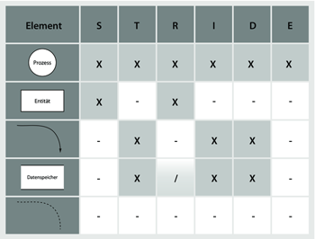{kind=link}
Abbildung 6.11 Zuordung von DFD-Elementen zu STRIDE-Kategorien
Nun haben Sie alle Informationen beisammen, um sich methodisch der Bedrohungsanalyse Ihrer App anzunehmen. Erstellen Sie eine Tabelle aller Elemente, und überlegen Sie für jedes Element, welche in die Kategorisierung des STRIDE-Katalogs passende Bedrohung für das betreffende Element vorhanden sein könnte. Da die Tabelle Ihre Software auf dem gesamten Lebensweg begleiten wird, empfiehlt sich für die Erstellung ein dynamisches, bei der Arbeit mit Tabellen halbwegs sinnvolles Medium wie Numbers, OpenOffice oder Excel. Das Erweitern und Bearbeiten einer Tabelle ist damit schlichtweg einfacher, und da Sie das Threat Modeling nicht zum Selbstzweck durchführen, sondern möglichst effizient arbeiten möchten, sollte das Handwerkszeug Ihnen möglichst viel Arbeit abnehmen.
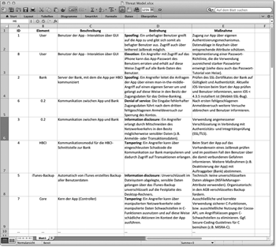{kind=link}
Abbildung 6.12 Threat Model der Beispiel-App
| Wichtige Grundregeln beim Threat Modeling |
|
Der große Nutzen des Threat Modeling liegt in der Methodik. Diese Methodik leitet
auch einen unerfahrenen Anwender durch die schwierige Aufgabe, spezifische Bedrohungen
für seine App zu ermitteln. Das Threat Modeling ist diese Methodik, und daher ist
es für den Erfolg unerlässlich, diese Methodik strikt anzuwenden. Das Zeichnen eines
DFD und das anschließende Anfertigen einer Tabelle aller Elemente und ihrer Bedrohungen
führt für sich genommen zu keinen bahnbrechenden Erkenntnissen; beide Tätigkeiten
sind aber darauf ausgerichtet, den Anwender zu führen.
|
Um Ihnen den Einstieg und die Arbeit mit den STRIDE-Kategorien zu erleichtern, finden Sie nachfolgend zu jeder STRIDE-Kategorie einige beispielhafte Bedrohungen samt geeigneter Gegenmaßnahmen.
Spoofing
Spoofing subsummiert alle Bedrohungen, bei denen ein Angreifer eine Identität fälscht, austauscht oder austauscht. Der Begriff der Identität ist dabei nicht auf die Identität einer Person beschränkt, sondern umfasst alle Objekte, die über eine Identität verfügen. Das können die verschiedensten Arten von Objekten sein:
- Benutzer
- Server
- App
- RSS-Feed
- Bibliothek
- Framework
- IP-Adresse
- www.ifoo.de
| Bedrohung | Maßnahme |
| Ein Angreifer fälscht die MAC-Adresse oder die IP-Adresse seines Rechners und umgeht auf diese Weise eine darauf basierende Authentisierung. | Authentisierung in der Anwendungsschicht durchführen oder zusätzliche netzwerkseitige Sicherungsmaßnahmen verwenden, z. B. SSL-Zertifikate für Server und/oder Client. |
| Ein Angreifer tauscht eine von der App verwendete Bibliothek durch eine mit Schadcode präparierte Bibliothek aus. | Integritäts- oder Versionsprüfung der verwendeten Bibliotheken. Sicherstellen, dass Bibliotheken ausschließlich von vertrauenswürdigen Verzeichnissen aus geladen werden. |
| Durch die Manipulation des Routings oder der Namensauflösung kann ein Angreifer die Zugriffe der App auf einen Webserver auf einen von ihm kontrollierten Webserver umleiten und auf diese Weise Zugriff auf sensible Daten erlangen. | Verwenden von SSL zur Identifizierung des Webservers (z. B. Prüfen des Zertifikates über den Vergleich des Fingerprints) |
Tampering
Alle Angriffe, die mit der Veränderung von Daten zu tun haben, fallen in die Kategorie Tampering. Das geht vom schreibenden Zugriff in eine Datenbank über eine SQL-Injection, über Manipulationen im Dateisystem bis zur Veränderung der Netzwerk-Kommunikation.
| Bedrohung | Maßnahme |
| Ein Angreifer kann über einen Man-in-the-middle-Angriff unverschlüsselte Netzwerkkommunikation abfangen (z. B. in einem öffentlichen Hotspot), den Datenstrom verändern und so z. B. in Transaktionen eingreifen. | Übertragung sensibler Daten ausschließlich über verschlüsselte Protokolle |
| Ein Angreifer deaktiviert durch einen über das Netzwerk applizierten Jailbreak die Sicherheitsmechanismen des iPhone seines Opfers und damit auch der App. | Prüfen auf das Vorhandensein eines Jailbreaks beim Start der App. |
| Ein Angreifer kann über eine SQL-Injection in der App schreibend auf die Datenbank des mit der App kommunizierenden Serversystems zugreifen. | Filtern aller Benutzereingaben auf potenziell schädliche Sonderzeichen. |
Repudiation
Repudiation fast sowohl das Verschleiern von Aktionen und Angriffen durch fehlendes Logging als auch Angriffe gegen und über Logging-Mechanismen zusammen.
| Bedrohung | Maßnahme |
| Ein Angreifer kann Aktionen gegen eine App oder ein aus einer App und einem Server bestehendes Kommunikationssystem durchführen, ohne dass diese Aktionen durch einen Logging-Mechanismus registriert werden. | Schreiben aussagekräftiger Log-Dateien und Speicherung der Daten an sicherer (dritter) Stelle. |
| Ein Angreifer kann sensible Daten aus Log-Dateien auslesen. |
Log-Dateien sollten gegen unbefugten Zugriff geschützt sein und keine sensiblen Daten wie z. B. Passwörter oder Transaktionsinterna (Kontostand etc.). enthalten. |
| Ein Angreifer kann den Logging-Mechanismus so beeinflussen, dass die Log-Dateien durch Rotation gelöscht werden, und dadurch seinen Angriff verschleiern. | Rotierte Log-Dateien nicht löschen. Logging in angemessener Detailtiefe, um das Anfallen zu großer Datenmengen in den Logfiles zu verhindern. |
Information disclosure
Die Preisgabe von Informationen jeglicher Art fällt in die Kategorie Information disclosure. Informationen können dabei an den verschiedensten Stellen anfallen und von beliebiger Natur sein. Beispiele für Information leakage sind die folgenden:
- Fehlermeldungen
- Sensible Informationen im Syslog (»Konsole«)
- Verwendung von Klartextprotokollen für vertrauliche Daten
- Secret Key für symmetrische Verschlüsselung als String im Binary
- Debug-Symbole
- Netzwerkbanner von Serverdiensten
| Bedrohung | Maßnahme |
| Eine App gibt bei (gezielter) Fehlbenutzung Fehlermeldungen mit Debug-Informationen aus. | Fehlermeldungen sollten grundsätzlich neutral gehalten sein. Debug-Informationen und Stack-Traces sollten ausschließlich in separate Debug-Logdateien oder an den Syslog-Server geschrieben werden. |
| Der geheime Schlüssel für die Verwendung eines symmetrischen Kryptoalgorithmus ist als String im App-Binary gespeichert. Ein Angreifer kann den String ohne großen Aufwand auslesen und erhält auf diese Weise Zugriff auf die Verschlüsselung. | Sichere Ablage geheim zu haltender Informationen, z. B. in der Keychain. Keine Verwendung eines einzigen statischen Schlüssels für alle Instanzen einer App. |
| Übertragung von Zugangsdaten über ein Klartextprotokoll (anfällig für Man-in-the-middle-Angriffe). | Übertragung sensibler Daten ausschließlich über verschlüsselte Protokolle. |
Denial of service
Der Begriff Denial of service ist aus Funk und Fernsehen im Zusammenhang mit DoS- oder DDoS-Angriffen (Distributed Denial of Service) auf Webseiten bekannt. Unter Denial of service versteht man aber nicht nur netzwerkbasierte Angriffe, die darauf ausgelegt sind, einen Webserver in die Knie zu zwingen, sondern alle Arten von Angriffen, die dazu führen, dass ein System nicht mehr so funktioniert wie vorgesehen.
| Bedrohung | Maßnahme |
| Ein Angreifer kann über die Importfunktion einer App eine Datei mit manipuliertem Format einschleusen und dadurch den Import-Parser der App lahmlegen. | Robuste Programmierung von Importfiltern und Parsern, um Angriffe über manipulierte Formate zu verhindern. |
| Wiederholte fehlerhafte Anmeldung an der App führt kommentarlos zum Löschen aller lokalen Daten. | Verwenden von Hinweisen, um den Benutzer auf die Gefahr aufmerksam zu machen, ggf. Implementierung einer Funktion zur Passwort-Merkhilfe. |
| Eine schmalbandige Netzwerkverbindung führt dazu, dass Kernfunktionalitäten einer App nicht mehr funktionieren. Ein Angreifer im lokalen Netzwerk kann dies beim Start der App für DoS-Angriffe ausnutzen, indem er das Netzwerk mit Paketen flutet. | Effiziente Netzwerkprogrammierung und angemessenes Error-Handling verwenden. |
Elevation of privileges
Die letzte STRIDE-Kategorie umfasst alle Angriffe, bei denen ein Angreifer Aktionen in einem anderem als dem eigenen Rechte-Kontext ausführt. Im Webbereich ist das Cross-Site-Scripting eine bekannte Schwachstelle, bei der ein Angreifer eigenen Code im Sicherheitskontext eines anderen Webservers ausführen kann.
| Bedrohung | Maßnahme |
| Ein unbefugter Benutzer greift auf die in den Hintergrund geschickte App zu und gelangt so in den Besitz sensibler Daten. | Sperren der App beim Wechsel in den Hintergrund. Reaktivierung nur über Eingabe der gültigen Zugangsdaten. |
| Ein Benutzer einer App oder ein Angreifer im Netz kann von einer App an einen Server übermittelte Daten so mit Schadcode manipulieren, dass der Server diesen Schadcode an andere Benutzer ausliefert. | Strikte Filterung von Benutzereingaben auf potenziell schädliche Sonderzeichen und Sicherstellen der Integrität der Netzwerk-Übertragung. Auf dem Server zusätzlich strikte Filterung aller Ausgaben auf potenziell schädliche Sonderzeichen. |
| Datenimport von einer nicht geprüften URL erlaubt einem Angreifer das Einschleusen von fehlerhaften Daten oder Schadcode. | Semantische Prüfung von importiertem Content, Filterung auf potenziell schädliche Sonderzeichen, Verwenden von SSL, um Kommunikationspartner im Netz eindeutig identifizieren zu können. |
6.3.3 Generische Design-Grundsätze
Beim sicheren Design von Software gibt es einige grundsätzliche Prinzipen, die man als Entwickler verinnerlichen sollte. Da es nur eine Hand voll sind, sollte das Merken nicht allzu schwerfallen, die konsequente Beachtung beim Design kann aber helfen, grobe Schnitzer zu vermeiden. Überdies taugt die Liste der Prinzipien in Kundengesprächen gut zum Bullshit-Bingo. ;-)
- Keep it simple, stupid: Von der Implementierung einer Klasse bis zum Design der Architektur sollte alles so einfach wie möglich gehalten sein. Komplexität führt zu Unübersichtlichkeit und Fehlern. Anstatt eine Methode in zwölf Ebenen zu schachteln, sollten Sie lieber eine Pause machen und nachdenken, wo in der Planung etwas falsch gelaufen sein könnte.
- Need to know: Beim Umgang mit Informationen sollten Sie sich immer die Frage stellen: »Wer muss was wissen?« Niemand muss mehr wissen als nötig. »Niemand« kann eine Person sein, eine App, eine Klasse, ein Server etc.
- Attack surface reduction: Die Anzahl der Eintrittspunkte für Daten (Entry points) sollte immer so gering wie möglich sein. Bevor man auf dem iPhone einen Serverdienst startet, sollte man lieber nachdenken, ob es nicht auch umgekehrt geht (als Client).
- Datensparsamkeit: Nur die Daten einfordern, verarbeiten und speichern, die für den Betrieb zwingend notwendig sind. Große Datenbanken üben eine magische Anziehungskraft auf Angreifer aus.
- Secure by default: Sie sollten sicherheitsrelevante Optionen standardmäßig aktivieren und den Benutzer oder Administrator diese manuell deaktivieren lassen, wenn es denn unbedingt notwendig ist.
- Least privilege: Verwenden Sie grundsätzlich die geringsten Rechte zur Ausführung von Operationen.
- Defense in depth: Verlassen Sie sich niemals auf singuläre Sicherheitsmechanismen, sondern implementieren Sie verschiedene Stufen der Sicherheit.
6.3.4 Threat Modeling aus der Tube – das Microsoft SDL Threat Modeling Tool
Wie in der Einführung zum Threat Modeling bereits erwähnt wurde, ist diese Methodik im Bereich der Software-Entwicklung ursprünglich von Microsoft eingeführt und verfeinert worden. Nach den großen Wurm-Plagen und den nicht abreißenden Meldungen über Sicherheitslücken in Microsoft-Produkten hat Microsoft im Jahr 2003 auf die Bremse getreten und mit dem Security Push den Grundstein für den in den folgenden Jahren immer weiter intensivierten und verfeinerten Secure Development Lifecycle (SDL) gelegt.
Neben dem Ziel, eigene Produkte sicherer zu machen, lässt Microsoft auch Dritte an seinen Erkenntnissen rund um den SDL teilhaben und hat dazu das Microsoft SDL Pro Network ins Leben gerufen. Auf der dazugehörenden Website, http://www.microsoft.com/security/sdl/, gibt es das Microsoft SDL Threat Modeling Tool kostenlos zum Download. Dieses Tool bietet eine Oberfläche zum Erstellen eines Datenflussdiagramms und erstellt aus diesem DFD selbstständig die Tabelle der für die Elemente des DFD potenziell wirkenden Bedrohungen – einfacher geht es wirklich nicht.
Nun wäre Microsoft nicht Microsoft, wenn es an der Sache nicht einen klitzekleinen Haken gäbe. Dieser äußert sich dergestalt, das zwar das Tool kostenlos ist, man zum Benutzen aber eine installierte Version von Visio auf dem Rechner haben muss, da die DFD-Erstellung im Tool über die Visio-Engine erfolgt. Honi soit qui mal y pense. Der Umstand, dass das Tool nur für Windows erhältlich ist, ergibt sich direkt aus dem Visio-Zwang und muss hier nicht extra erwähnt werden.
Nichtsdestotrotz ist es zurzeit das einzige Tool, das Threat Modeling am DFD ermöglicht und diese Aufgabe auch hinreichend gut erledigt. Daher lohnt sich, sofern Windows und Visio vorhanden sind, auf jeden Fall ein Blick auf das Tool.
Das Tool ist von Entwicklern für Entwickler konzipiert worden und nicht von Security-Experten für Security-Experten. Das schlägt sich in der angenehm intuitiven, zielgerichteten und einfachen Bedienung nieder. Nach dem Start erstellt das Tool ein rudimentäres DFD, um die grundlegende Funktionsweise zu demonstrieren.
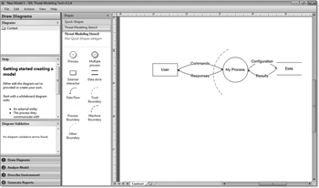{kind=link}
Abbildung 6.13 Das Microsoft SDL Threat Modeling Tool
Das DFD befindet sich, nicht zu übersehen, im rechten Teil der GUI. Links daneben, im Bereich Shapes finden Sie alle Elemente, die Sie für die Erstellung eines DFD benötigen. Ziehen Sie die benötigten Elemente einfach in den Zeichenbereich rechts, und erstellen Sie die notwendigen Verknüpfungen.
Das Tool analysiert das DFD in Echtzeit und gibt Verstöße gegen die Semantik links im Bereich Diagram Validation aus. Das merken Sie spätestens dann, wenn Sie ein oder mehrere Elemente im DFD nicht korrekt verknüpft haben. Ein Prozess ohne Verbindungen z. B. führt zu der in Abbildung 6.14 gezeigten Fehlermeldung.
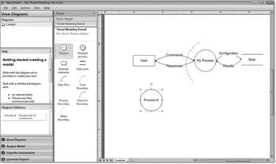{kind=link}
Abbildung 6.14 Das Tool meldet einen Validierungsfehler.
Der Bereich Help im linken Teil der GUI gibt eine Minimal-Anleitung für die Erstellung eines DFD und verweist auf die dem Tool beiliegende Hilfe-Datei, die im Übrigen sehr gut ist.
Links oben befindet sich im Bereich Diagrams die Übersicht über die Ebenen des DFD. Fügen Sie mit der rechten Maustaste einfach weitere Ebenen hinzu, wenn Sie Ihr Diagramm weiter aufteilen möchten. Das DFD unserer Beispiel-App lässt sich somit ohne großen Aufwand über alle Ebenen in dem Tool darstellen (siehe Abbildung 6.15).
Der wahre Nutzen des Tools ergibt sich erst aus der Transformation der DFD-Elemente in die Liste der STRIDE-Kategorien. Dies erfolgt über den Button Analyze Model rechts unten im Fenster. Das Tool erstellt eine Liste der DFD-Elemente und fügt jedem Element die STRIDE-Bedrohungen hinzu, die für dieses Element wirken können (siehe Zuordnungen in Abbildung 6.11).
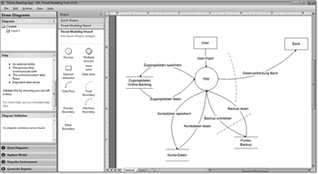{kind=link}
Abbildung 6.15 DFD der Beispiel-App im Threat Modeling Tool
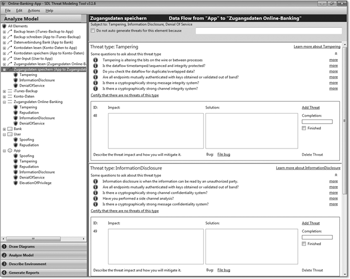{kind=link}
Abbildung 6.16 Die Liste der DFD-Elemente und ihrer STRIDE-Bedrohungen
Durch Auswahl eines Elements öffnet sich rechts im Fenster die Liste der STRIDE-Bedrohungen. Neben einigen Informationen und Beispielen zu den einzelnen Bedrohungen gibt es dort für jede Bedrohung ein Textfeld mit dem Titel Impact und eins mit dem Titel Solution (siehe Abbildung 6.17). Im Feld Impact formulieren Sie die von Ihnen identifizierte Bedrohung und im Feld Solution die entsprechende Maßnahme.
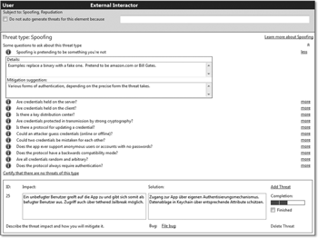{kind=link}
Abbildung 6.17 Spoofing für das Element »User«
Möchten Sie keine Bedrohung formulieren, beispielsweise weil Ihnen keine einfällt oder weil Sie eine mögliche Bedrohung als akzeptabel erachten, klicken Sie auf den Link Certify that there are no threat of this type und geben die Begründung für diese Entscheidung an (siehe Abbildung 6.18).
Über den Button Describe Environment unten links im Fenster können Sie Metadaten zum Threat Model angeben, die das Tool in den Bericht übernimmt. Dies ist zu Dokumentationszwecken durchaus sinnvoll. Um einen Bericht zu erstellen, wählen Sie ebenfalls unten links Generate Reports aus und lassen sich das Threat Model anzeigen. Dieser Bericht enthält die von Ihnen angegebenen Metadaten, das oder die DFDs, eine nummerierte Aufzählung aller Elemente der DFDs sowie die komplette Liste aller von Ihnen formulierten Bedrohungen, Maßnahmen und Begründungen für akzeptierte Bedrohungen. Für Einsteiger in die Thematik, die Zugriff auf Windows und Visio haben, ist das Tool also eine sinnvolle Hilfe.
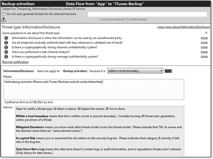{kind=link}
Abbildung 6.18 Ein akzeptiertes Risiko
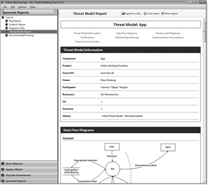{kind=link}
Abbildung 6.19 Der Threat-Model-Report
Ihr Kommentar
Wie hat Ihnen das <openbook> gefallen? Wir freuen uns immer über Ihre freundlichen und kritischen Rückmeldungen.